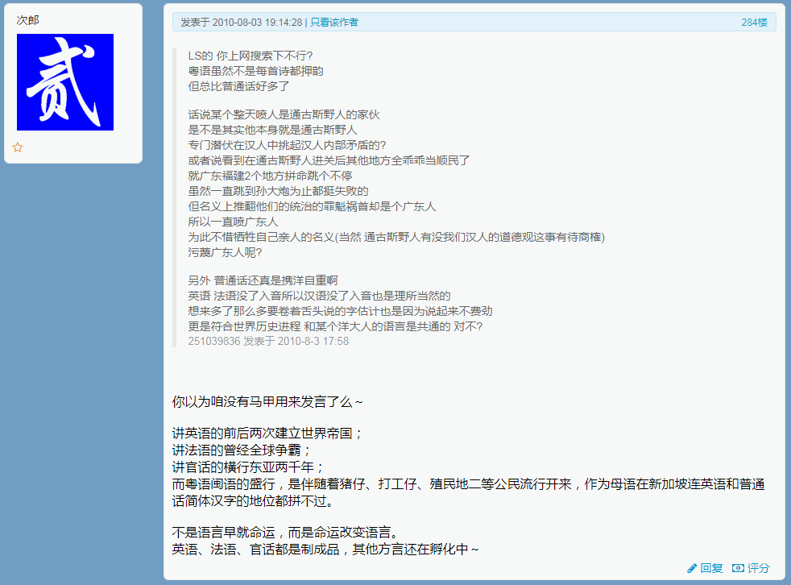
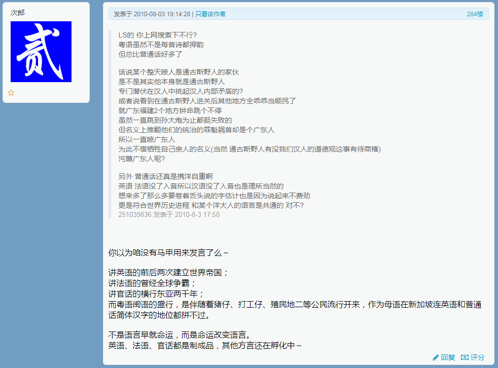

2020-09-20 09:00
洗完澡了精神抖擞容光焕发，上网乱转发现漠北大手情报机构指使的岭南精盎情报掮客在向有关部门举报我的个人博客站点之余，还在匿名索虏之上匿名执行煽风点火挑拨离间的岗位职责：

简单说，先建议美帝灯塔国散伙「各回各家各找各妈」，除了一个亲爹大盎帝国和俩亲妈大伊比利亚帝国之外，不知道为啥多了一对「紧密民事关系」黑鬼野爹和日本干妈出来。
然后就有「孤儿」表示质疑，说咱大魁北克人明明是大法兰西帝国的贵种，凭啥要过继给盎格鲁索虏。然后有人嘲笑说您大魁北克贵种独立不了，是因为北边裹胁了太多爱斯基摩野种，南边又被大盎格鲁野种渗透得如同筛子一般。
再然后又有「孤儿」表示质疑，说咱大德意志人虽然是遭遇了杀将留兵打散编制才落户吧，为了避免歧视还把施密特改成史密斯，把独龙谱改成川普，但好歹也韬光养晦这么多年了，现在「高筒礼帽单片眼镜虽然挂在身，我心依然是德意志民族神圣罗马帝国心」该为祖宗龙兴之地做点贡献了。
再然后就是掺杂了各种方言和俚语的互喷，详情可参考之前「让盎格鲁人再次说德语」相关素材，虽然拉丁字母都认得全，但仍然看不懂，于是作罢。
与此同时，国际一流和谐宜居之都「高学历精英社交圈」出现了一条武德甚为充沛的重要情报：
简单说，前面提到了通古斯太君在岭南的分布情况，九省通衢「军网最黄黄网最军」曾经爆料「随尚可喜南下的是一拨，随林彪南下的又是一拨」，并且都有「洋人」协助，好比匈牙利的马扎尔铸炮师协助土耳其攻陷拜占庭一般。
具体到尚可喜这次，为什么只杀了七万，因为通古斯太君人数不够，生存空间腾出太多了就占不过来了，于是传达最高指示，说房地产建设之「土地平整」阶段用不着贪大求全，只要够建个碉堡炮楼或曰「满城」就行。
至于为啥林彪那次再来一回，据称因为是几百年河清海晏歌舞升平，周边费拉又渐渐混进广州城了，挤占了通古斯太君的生存空间。并且几百年间通古斯太君过于接地气，与龙兴之地渐渐产生了隔阂。
这个话题在之江临安「原创文学论坛」之上曾经吵过。当时漠北大手情报机构指使的岭南精盎情报掮客提出了一个尖锐的问题「普通话是通古斯特色汉语」理由居然是「就连洋人都把普通话称为“满大人”」遭到有识之士迎头痛击，那时候我掺和的战场是这个：
关于普通话和满清的关系


 



在其它话题当中也有零星发言，懒得找了。
总之过程都一样，先面向不明真相的人民群众摆事实讲道理，然后职业喷子，也就是漠北大手情报机构指使的岭南精盎情报掮客跳将出来睁大眼睛额头亮晶晶的装蒜兼贵人多忘事，胡说八道胡搅蛮缠、撒泼耍赖满地打滚、颠倒黑白混淆是非，倒打一耙贼喊捉贼……我就针锋相对以毒攻毒以人身攻击还人身攻击，然后职业喷子，也就是漠北大手情报机构指使的岭南精盎情报掮客向有关部门举报，将我的帐号以「政治敏感」理由「亦当删去」。
所以前面提到我对「网络暴力」毫无感觉，并不是吹牛说大话打肿脸充胖子，各位读者不要把我这种「言必信行必果硁硁然」的小人与那帮「杀伐果断通权达变」「藏器于身待时而动」「善假于物也」的君子混为一谈。
2020-09-20 12:00
中午了，国际化大都市「华语第一精日论坛」之上出现了久违的重要情报：
武汉弘芯千亿项目停摆之谜：最大股东零出资与此同时，九省通衢の煎蛋之上出现了捅妓上的相关性甚高的「短视频」：

说时迟那时快，国际一流和谐宜居之都「高学历精英社交圈」正在首页今日头条位置醒目应景推荐了一条广告：
coub是个什么样的网站，你对使用它有什么心得？而在匿名索虏之上，漠北大手情报机构指使的岭南精盎情报掮客还在雷打不动的煽风点火挑拨离间，提供了「东亚鸡巴大数据」，还是东洋太君视角：
简单说，要结合最近抖音相关新闻一起理解。摘抄一段公开情报：
张一鸣，男，1983年出生于福建省龙岩市永定区，客家人，南开大学毕业，北京字节跳动科技有限公司创始人、CEO，今日头条创始人、原CEO。
张一鸣2005年毕业于南开大学软件工程专业，曾参与创建酷讯、九九房等多家互联网公司，历任酷讯技术委员会主席、九九房创始人兼CEO。2012年，张一鸣创办字节跳动。
但是没看见复旦残联下属滴血认亲实验室提交的鸡巴鉴定报告，有待进一步情报。
总之，根据现实素材构思的情节，还是围绕着「三年以来，三十年以来，三百年以来，三千年以来目睹之怪现状」的根本原因，即「鸡巴决定脑袋」的唯种辩证法与「碧池创造历史」的唯种史观，或曰「生产力决定生产关系，经济基础决定上层建筑，社会存在决定社会意识，下半身决定上半身，家务事决定公务事」。
2020-09-20 19:00
喝多了回来了，简单写几句睡了。
随便转转发现有漠北大手情报机构指使的岭南精盎情报掮客指桑骂槐说开头运用匿名岛夷出现的「黑鬼野爹和日本干妈」相关素材在攻击「无产阶级文学家、思想家、革命家」鲁迅同志与「新浪人民的好总理」周恩来同志。
怎么说呢，复旦残联下属滴血认亲实验室鉴定过这二位属于「E
泥鸽太君」，人民群众又没有唯物主义分子生物学实验室和充沛预算可供验算，没什么好说的。只不过，还没看到复旦残联下属滴血认亲实验室提交的线粒体鉴定报告，对于「日本干妈」相关舆论暂时保留意见。
2020-09-21 03:30
刚爬起来酒劲还在头昏脑胀， 上网乱转发现在南直隶「远东第一体育论坛」出现了一条科技甚为昌明民智甚为大开始终代表了最先进生产力的高学历精英甚为与时俱进的重要情报：
类似观点在之前「人工智能是不是一场巨大的骗局」「区块链是不是一场巨大的骗局」「5G是不是一场巨大的骗局」系列重要情报当中也出现过。
正方辩友的论据集中在「不惜一切代价拼命消耗电力」之上，无论是玩命进口英伟达显卡塞满机房反复筛查大数据，还是玩命进口英伟达矿卡或进口芯片自造矿卡塞满内蒙小火电甘肃小风电云南小水电周边废弃建筑，或是运营商抱怨同样覆盖面积之下5G耗电量超过4G十倍，都一样，然后被反方辩友喷做「民科」「杠精」「反社会人格」。
到了今天，终于不兜圈子不绕弯子，矛头直指「电力」了。按照惯例，国际一流和谐宜居之都「高学历精英社交圈」会派遣远征军南下，大批从小比人聪明还比人努力的各种科学技术神童贵种大少爷把牛桥剑津常青藤博士学位证书拍将出来，放话「装哔正好撞到咱擅长的领域上」然后哗哗转贴万言书和两院院士的推荐信，指天发誓拍胸脯保证「风口上猪都会飞，油改电稳得一哔，真出事了你把我脑袋拎走」。
通常这种时候正方辩友就退散了，还有看见克莱登大学法学博士或经济学博士就纳头便拜的，除了「真·杠精」之外。但是今天不一样，这位辩论主持人唤作加州周杰伦，参考开头的美帝灯塔国散伙地图，「周杰伦」通讯地址到底是北加州旧金山还是南加州洛杉矶，涉及到东南的黑鬼野爹替它找了伊比利亚干妈还是日本干妈的问题。
所以那份重要情报当中大批美帝灯塔国西北注册用户从当地视角看来才会奇怪：到底是哪儿来的野种从事路径依赖工作，二战不是打赢了么？难道是《高堡奇人》时间线，想必好莱坞所在的洛杉矶附近老墨慷他人之慨，自己认了伊比利亚干妈把我们卖给日本鬼子。
不惮以最大的恶意揣测，这是国际一流和谐宜居之都「高学历精英社交圈」两位创始人周源黄继新之间的内讧。
而文曲星们则是另外一种态度，无论是钦定文豪还是码字巨侠，纷纷曰若稽古讨论2008年划时代大作《伐清》当中的「科幻」因素，因为文中主角美术兲才邓名三步并作一步走，跳过前两次工业革命的蒸汽朋克燃气朋克，直接进入电气时代赛博朋克，升级路线图就是直接上电池然后电动机，控制范围内大造特造电网和电话电报网络。
这就扯到之前提到的「科幻文艺退潮」相关情报了，其中有明确表达嘲讽的观点：
刚好这位「钢铁侠」马一龙大展拳脚的领域，除了造电动车之外就是航天事业。
另外，之前多年间关于美帝灯塔国阿波罗系列重要登月实践，被民间人士指责为「好莱坞摄影棚出品」，还罗列了大批证据以纪录片形式揭露骗局，制作精良程度堪比后来《华氏911》那种规格，然后被高学历精英嗤之以鼻，理由居然是「苏修都没意见，你急个啥」，这时候就不提「每次苏修核弹计划到了卡壳的时候上级领导就会拿出未经演算但就是正确的数据来」之类战略工程亲历者回忆录系列材料了。
不惮以最大的恶意揣测，这「一群骗子」就是「新时代墨家」「走毕达哥拉斯路线的当权派」，已经渗透到全球各个国家和地区的主席台前三排了，甚至本身就是「太上国度」的一个组成部分。至于为什么这帮高学历精英可以如此呼风唤雨，倒是可以参考科技史上那许多重大突破之后带动整个社会政治经济文化的迅猛发展，这叫「科技红利」，最近一次应该就是通古斯大爆炸试验核弹成功然后掀起世界大战，按照「任何科学技术的突破总是率先应用到军事领域」然后攫取「战争红利」成功上位。
但是呢，「重大突破」又不是平稳的随机过程，没什么「按照常理也该突破了」之类规则，于是这帮高学历精英按照常理画了大饼开了空头支票之后发现兑现不了，就开始「学术剥削」了，就连剥削都没什么进展之后，就开始诈骗了。
有一个时间点可以对上，之前有「工匠」解释过自打1968年以来机械加工的最高精度就再没有突破过，正好验证「我中华兲朝上国69年以来最大丑闻」的原因。至于其中所暗示1969年以前还有更大的丑闻，应该与美帝灯塔国阿波罗系列重要登月实践有关，与肯尼迪大统领创业未半而中道崩殂有关。
最后扯一句码字相关，「三年以来，三十年以来，三百年以来，三千年以来目睹之怪现状」这种措辞，与《设定集》《异闻录》都有关系，毕竟都是参考本位面历史影射的。
目前可以决定《异闻录》这边的时间点，「三年以来」从2017年法兰西妈控大统领全票冻蒜开始计算，「三十年以来」从春夏之交和苏修解体开始计算，「三百年以来」从1720年「南海公司泡沫」事件当中物理学家兼金融家牛顿爵士先落袋为安7000英镑但是在幕后黑手警告下又买回来眼睁睁的亏干净开始计算。
而在《设定集》那边，注释〔三十〕当中已经写过了只有时间轴没有时间点，所以「三年」「三十年」「三百年」的重大事件都可以架空虚构，只不过最终的「希帕索斯纪念碑」铭文已经决定，也在多处谈笑风生当中提到过：
……由此上溯到公元前五百年，从那时起，为了反对内外敌人，追求真理和推动文明进步，在历次斗争中牺牲的数学英雄们永垂不朽！